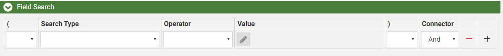
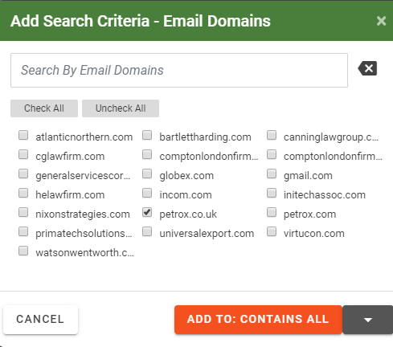
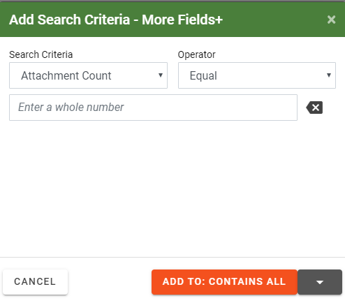
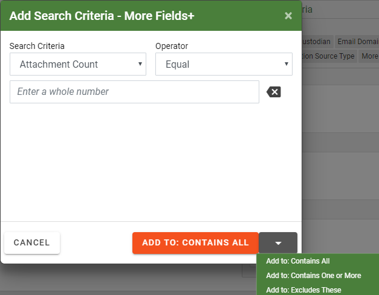

To limit a search to a specific field and/or perform any of several specialty searches (such as a search for specific tags or redactions), complete the following procedure. The following figure shows a simple field-specific search combined with a redaction search.
Begin
with the
If the Field Search section is not visible in the Advanced
Search tab, click the corresponding arrow  to expand the section.
to expand the section.

Construct the first search statement for your search as follows:
Select the required Search Type from the list—either a field name or one of the special search types.
|
|
Tips:
|
Below the search statement line, select or enter required search details, which vary depending on the type of search. For example, for a (Doc Tags) search, select the document tag(s) for which you want to search. To clear the list, click Clear Selections.

|
|
Note: To ensure a correct search statement, select from options below the search statement line—do not type in the Value field. |
Select the required Operator. Operators vary depending on the Search Type chosen. They are presented in plain language for easy understanding. Operator choices are listed in the following table.
|
operator |
Description |
||
|
Any of These |
The selected field contains any of the selected field entries. For example, if the field is Custodian and 5 custodian names are checked, documents associated with any of the custodians will be included in the search results. |
||
|
None of These |
The selected field contains none of the selected field entries. For example, if the field is Custodian and 5 custodian names are checked, only documents not associated with any of the custodians will be included in the search results. |
||
|
All of These |
The selected field contains all of the selected field entries. For example, if the field is Custodian and 5 custodian names are checked, only documents associated with all of the custodians will be included in the search results. |
||
|
Not All of These |
The selected field does not contain the combination of selected field entries. For example, if the field is Custodian and 5 custodian names are checked, only documents that are associated with all of the custodians will be excluded in the search results. |
||
|
Is Not Empty |
The selected field is empty. For example, if the Coding Date field set to Is Not Empty only documents that have a Coding Date defined will be included in the search results. |
||
|
Is Empty |
The selected field is empty. For example, if the Coding Date field set to Is Empty only documents that do not have a Coding Date defined will be included in the search results. |
||
|
Contains |
The selected field contains the search term/phrase (other content may also exist).
|
||
|
Does Not Contain |
The selected field does not contain the search term/phrase (other content may exist).
|
||
|
Equal |
The field content matches exactly the search/term phrase. |
||
|
Not Equal |
The field content does not exactly match the search/term phrase. |
||
|
Set |
The field is not empty; content exists in the field. |
||
|
Not Set |
The field is empty; no content exists in the field. |
||
|
Is Less Than |
Field content is less than the specified value. For numeric or date fields, this refers to numbers/dates; for text-related fields it refers to the letters of the modern English alphabet (a - z). |
||
|
Is Greater Than |
Field content is greater than the specified value. For numeric or date fields, this refers to numbers/dates; for text-related fields it refers to the letters of the modern English alphabet (a - z). |
Enter or select the content/item(s) to be searched. For example, for a field search, enter the search text. For a document tag search, select the tag(s) of interest.
To include another search statement in this
area, select the required connector (And,
Or, Not)
on the right side of the statement, then click  and
go to the next step. Otherwise, skip to step
7.
and
go to the next step. Otherwise, skip to step
7.
When all statements are added, collapse all details and review your search.
|
|
Note: To make changes, do not change a search type for a completed line. To change a search type, delete the incorrect line and add a new line with the needed search type. You can change the operator or values for a completed line if needed. To change the value, expand the line as shown in the previous steps. To
remove individual lines, click To remove all search criteria and start over, click the Clear Search button at the top of the Advanced Search page. |
If two or more statements should be grouped
into an expression you need to use parentheses, see
Click the left parenthesis, (, next to the start of the combined expression. Nested expressions can be created by selecting (( or (((.

Locate the end of the combined expression and select the right parenthesis, next to it. The options are ) or )) or ))) for nested expressions. The following example shows a search expression that will find certain tags OR redactions AND include “Morrison” in the Author From field.
After the field and/or special search is defined,
complete your advanced search definition as needed. When finished, go to
The following procedure allows you to save time when searching for different values for a specific field or for specific batches. For example, you may need to find five specific names in a Custodian field (or all custodians except for those five). Instead of creating a separate search statement for each name, you can enter all names in one statement. This type of search statement automatically uses the OR connector.
To define a multi-entry search statement:
If the Fields
Search section is not visible in the Advanced
Search tab, click the corresponding arrow, .
Select the required search item (see the previous table) and an operator of Equal or Not Equal.
In the entry area, type (or paste) the required list of search items (up to 10,000), with one term on each line and a hard return between lines. The following figure shows a search for custodians that are not equal to a particular set of names.

Complete your search definition. For more information, see
After you have selected the field(s) you want to use in your chart’s axis, you can further refine your search by selecting additional search criteria, as shown in the following procedure. The following shows a filter field search using the Add Search Criteria - Email Domains dialog box.

Become familiar with the Search Criteria section on the Visual Search tab. See
Click one of the Search Criteria buttons listed in the Select Criteria section.
Or click the button.
The Add Search Criteria - More Fields+ dialog box appears.

|
operator |
Description |
|
Is Not Empty |
The selected field is empty. For example, if the Coding Date field set to Is Not Empty only documents that have a Coding Date defined will be included in the search results. |
|
Is Empty |
The selected field is empty. For example, if the Coding Date field set to Is Empty only documents that do not have a Coding Date defined will be included in the search results. |
|
Equal |
The field content matches exactly the search/term phrase. |
|
Not Equal |
The field content does not exactly match the search/term phrase. |
|
Is Less Than |
Field content is less than the specified value. For numeric or date fields, this refers to numbers/dates; for text-related fields it refers to the letters of the modern English alphabet (a - z). |
|
Is Greater Than |
Field content is greater than the specified value. For numeric or date fields, this refers to numbers/dates; for text-related fields it refers to the letters of the modern English alphabet (a - z). |
|
Is Less Than Or Equal To |
Field content is less than or equal to the specified value. For numeric or date fields, this refers to numbers/dates; for text-related fields it refers to the letters of the modern English alphabet (a - z) |
|
Is GreaterThan Or Equal To |
Field content is greater than or equal to the specified value. For numeric or date fields, this refers to numbers/dates; for text-related fields it refers to the letters of the modern English alphabet (a - z). |
After the text search is defined, select the search criteria box in which you want to place your visual search by selecting the appropriate option from the drop down menu.

 ,
,  , or
, or  .
.
Related Topics


 next to an unneeded or incorrect
statement.
next to an unneeded or incorrect
statement.